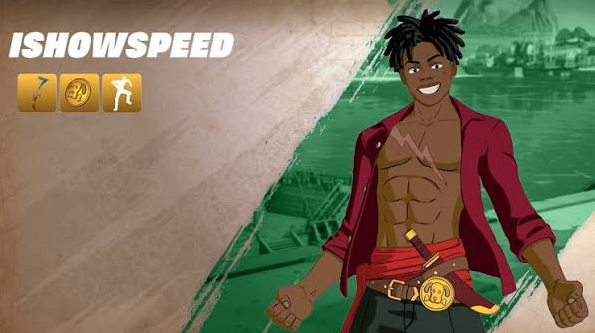
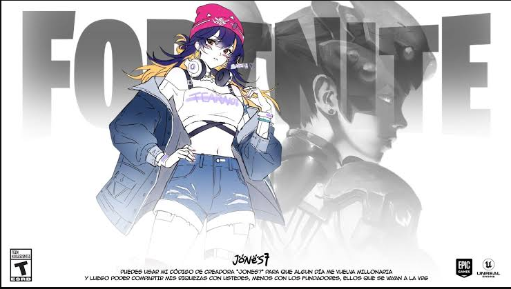
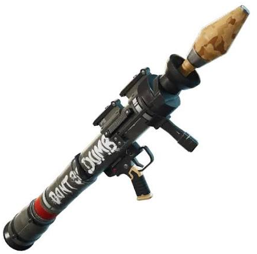
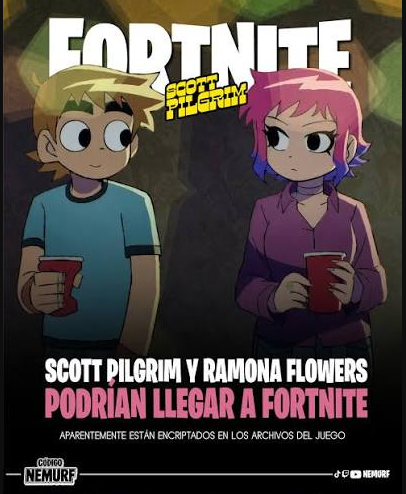
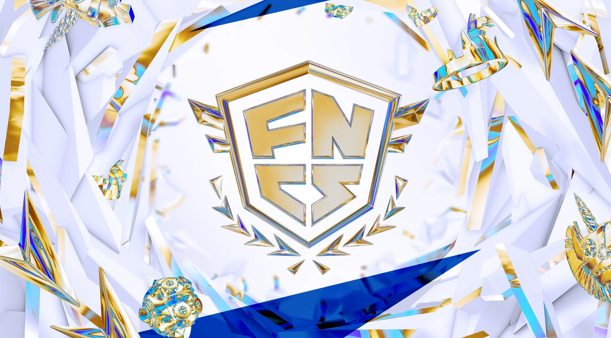

Toda la actualidad sobre Battle Royale, Reload y Competitivo

El popular creador de contenido regresa a la Serie de Ídolos con un aspecto homenaje a Monkey D. Luffy que ya puede conseguirse en la Tienda de Objetos —e incluso desbloquearse gratis mediante fichas pirata— por tiempo limitado.

Los últimos archivos encriptados del parche v43.10 confirman una nueva tanda de héroes de Blizzard para la tienda de objetos. El lote estará encabezado por Kiriko, con zapatillas de pisadas personalizadas, junto a una segunda heroína aún por desvelar. Consulta todos los detalles de la filtración.

Quienes logren derrotar al jefe del barco The $.$. Rocky consiguen este explosivo mítico que impulsa al jugador por los aires mientras bombardea el suelo. Su doble función de ataque y movilidad rápida lo ha vuelto indispensable en las partidas de Battle Royale.

Nuevos cosméticos ocultos en la actualización adelantan el salto de Scott Pilgrim Takes Off al catálogo del juego. El paquete incluiría a Ramona Flowers con su martillo gigante como pico y un gesto especial inspirado en la espada Power of Love.

La escena competitiva de Fortnite atraviesa uno de sus momentos más decisivos de la temporada. Durante los últimos siete días, miles de jugadores de todo el mundo han luchado por asegurar su presencia en la gran final de la FNCS de Recarga en solitario, un torneo que pondrá en juego un bote acumulado de 581.200 dólares el próximo 21 de noviembre.
La minitemporada Cazatesoros entra en su tercera semana con la llegada de nuevas capitanas pirata a la isla. Desde el 15 de noviembre, Hatsune Miku y Kasane Teto protagonizan el nuevo contenido temático junto a la ubicación Villa Amistad, nuevas misiones y recompensas gratuitas desbloqueables dentro del evento.
De cara al cierre de año, la compañía ha confirmado que el 5 de diciembre se implementarán importantes novedades en la suscripción del Club de Fortnite. Aunque todavía se guardan detalles bajo llave, el anuncio ha generado gran expectación entre los suscriptores por la posible integración de nuevos beneficios o pases adicionales.
2026 Fortnite Daily - Periódico digital desarrollado por Michael